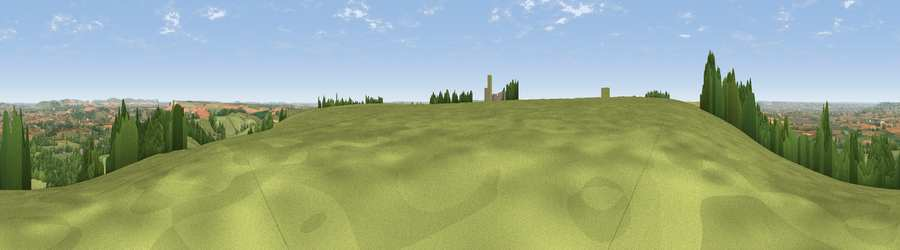

Viewpoint near Erlestoke
#12026 in England · top 16% of its area beats it · near ErlestokeWhere it is
The exact computed spot (ST 95975 52675). Click the marker for map links.
The view, rendered

A 360° render of this exact spot computed from the terrain model, tree cover and land cover — summer colours, afternoon light, calibrated against photographs of famous viewpoints. Real trees, hedges and buildings will differ in detail.
The panorama
Grey silhouette: terrain skyline in each direction (720 bearings, Earth curvature and refraction included). Dashed green: skyline with trees (+15 m) and buildings (+8 m) as obstacles. Blue strip: how far the ground is visible on each bearing.
Where the view opens
Wedge length = distance to the farthest visible ground on that bearing (vegetation-aware). Rings at 10, 25 and 50 km.
What fills the view
58% grassland · 26% woodland · 14% cropland · 2% built-up
Angular shares of the visible panorama (visual magnitude), not map area. Landscape diversity 0.44 (0–1 Shannon).
Key numbers
More beautiful places nearby
The staircase of upgrades: each row has a higher view potential than everything closer. Driving times are estimates from straight-line distance, calibrated against real road routing — check an actual route before setting out.
| Place | Direction | Drive | Score |
|---|---|---|---|
| Stoke Hill | W · 0 km | ~1 min | 60.9 |
| Viewpoint near Edington | W · 2 km | ~5 min | 65.4 |
| Viewpoint near Edington | W · 3 km | ~8 min | 71.9 |
| Viewpoint near Bratton | W · 6 km | ~13 min | 73.2 |
| King's Play Hill | NNE · 14 km | ~26 min | 73.9 |
| Cley Hill | WSW · 14 km | ~26 min | 76.8 |
| Martinsell viewpoint | ENE · 25 km | ~40 min | 76.9 |
| Viewpoint near Berwick St John | S · 32 km | ~50 min | 78.2 |
51.27321, -2.05908 · source: screening · position refined by local search. Computed location — check access rights before visiting.